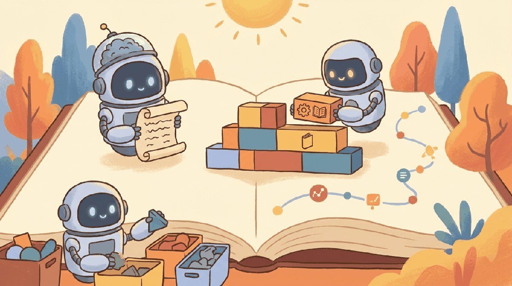

"A word is characterized by the company it keeps."
Lexica, Distributional AI Agent
Chapter 0 gave you the PyTorch foundations: tensors, autograd, the training loop. Now we turn from generic deep learning to the specific problem this book is about: how do you represent text as numbers a model can learn from? The chapter starts with the classical answers (bag-of-words, n-grams, TF-IDF), shows what they got wrong, and ends with the embedding revolution (Word2Vec, GloVe) that made transformers possible.
Chapter Overview
Every modern AI system that can read, write, or converse began with the ideas in this chapter.
How do machines learn to read? This chapter traces the evolution of text representation from counting words to understanding meaning. Building on the neural network and optimization fundamentals from Chapter 00: ML and PyTorch Foundations, we start with the fundamental challenge of turning raw human language into numbers, work through classical techniques like Bag-of-Words and TF-IDF, then explore the revolution sparked by Word2Vec and dense word embeddings.
Along the way, you will build a complete text preprocessing pipeline, train word embeddings from scratch, explore the famous king/queen analogy, and see how contextual embeddings (ELMo) paved the road to the transformer models covered in Chapter 04: Transformer Architecture. Understanding this progression is essential: the entire history of NLP is a quest for better representations of meaning, and each technique you learn here is a building block for everything that follows.
For most of human history, reading meant a person staring at marks on a surface and decoding them through years of practice. Teaching a computer to read took three big tricks: turn marks into numbers (tokenization), turn numbers into meaningful coordinates (embeddings), and let those coordinates shift with context (contextual embeddings). This chapter is the story of how those three tricks went from research curiosities to the bedrock of every modern LLM.
Every LLM is built on top of representations of text: how you turn words into numbers determines what the model can learn. This chapter traces the path from one-hot vectors through word embeddings to contextual representations, the conceptual ancestors of the transformer attention mechanism in Chapter 3. Understanding why these representations evolved as they did is the fastest way to build intuition for everything that follows.
- Explain the evolution of NLP from rule-based systems to modern LLMs (surveyed in Chapter 07: Modern LLM Landscape) and why each transition happened
- Build a complete text preprocessing pipeline using spaCy and NLTK
- Implement and compare Bag-of-Words, TF-IDF, and one-hot encoding, and articulate their limitations
- Explain how Word2Vec, GloVe, and FastText create dense word representations and why they work
- Train a Word2Vec model from scratch (using techniques from Chapter 00) and explore word analogies
- Explain why static embeddings fail for polysemous words and how ELMo introduced contextual embeddings
- Articulate the "big picture" of how text representation evolved toward transformers and LLMs (explored further in Chapter 06: Pretraining & Scaling Laws)
Prerequisites
- Chapter 0: ML and PyTorch Foundations (especially sections on neural networks and gradient descent)
- Python proficiency (functions, classes, list comprehensions)
- Basic linear algebra: vectors, dot products, matrix multiplication
- Familiarity with NumPy and basic scikit-learn usage
Sections
- 1.1 Introduction to NLP & the LLM Revolution This entire book is a journey through one central question: How do we represent language in a form that machines can work with? Entry
- 1.2 Text Preprocessing & Classical Representations Text preprocessing is about reducing noise while preserving signal. Entry
- 1.3 Word Embeddings: Word2Vec, GloVe & FastText This section builds on the text preprocessing pipeline from Section 1.3 and the concept of feature representations from Section 1.3. Intermediate
- 1.4 Contextual Embeddings: ELMo & the Path to Transformers This section assumes you understand static word embeddings (Word2Vec, GloVe) from Section 1.4 and their key limitation: one vector per word regardless of context. Intermediate
- 1.4a Contextual Embeddings Lab, BERT Pretraining & Exercises Hands-on Word2Vec-vs-BERT polysemy lab, the BERT pretraining recipe (MLM + NSP), and exercises consolidating the static-to-contextual story. Intermediate
- 1.5 Why Tokenization Matters Think of tokenization as choosing the alphabet for your model's language. Entry
- 1.6 Subword Tokenization Algorithms You should have read Section 1.6: Why Tokenization Matters, which covers the vocabulary-coverage tradeoff and the problems with word-level and character-level tokenization that motivate subword... Advanced
- 1.7 Special Tokens, Chat Templates, and Tiktoken Mechanics of special tokens, chat templates, and the tiktoken library for fast BPE encoding. Advanced
- 1.8 Multilingual Tokenization, Multimodal Tokens, and Cost Estimation Fertility differences across languages, multimodal tokenization, and how to budget API costs. Advanced
What's Next?
Next: Chapter 2: Sequence Models & the Attention Mechanism. Tokens and embeddings give us a way to represent text as vectors, but text is not a bag of words: order matters, and faraway tokens often depend on each other. Chapter 2 traces the path from recurrent networks (which forget) to attention (which lets every position look at every other position). By the end you will see exactly why "Attention is All You Need" is more than marketing.